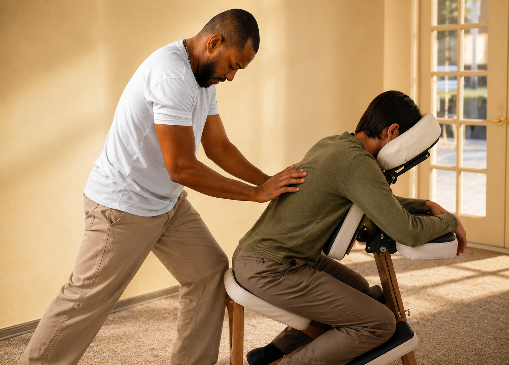
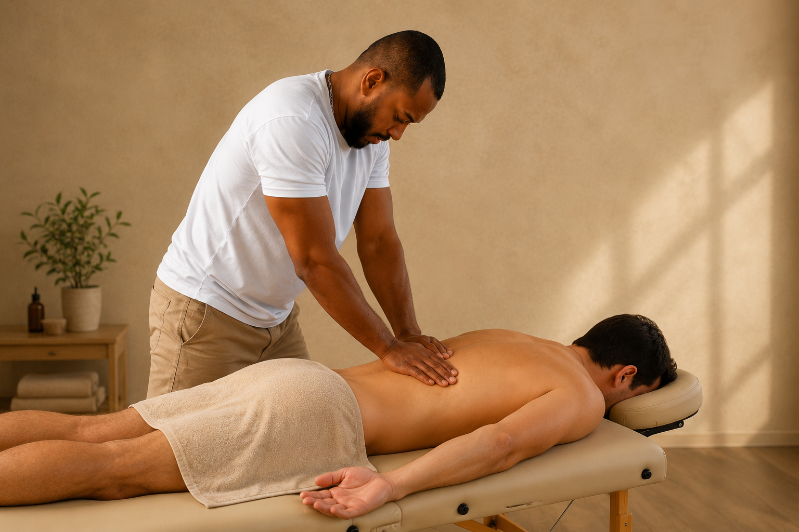
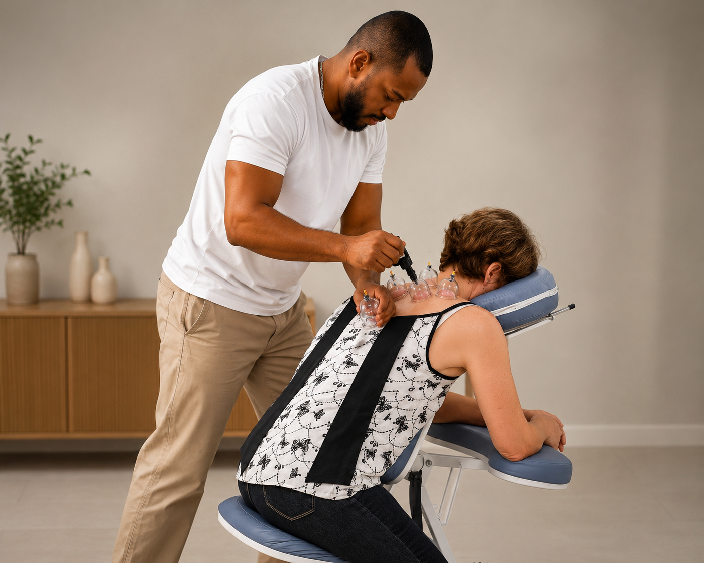
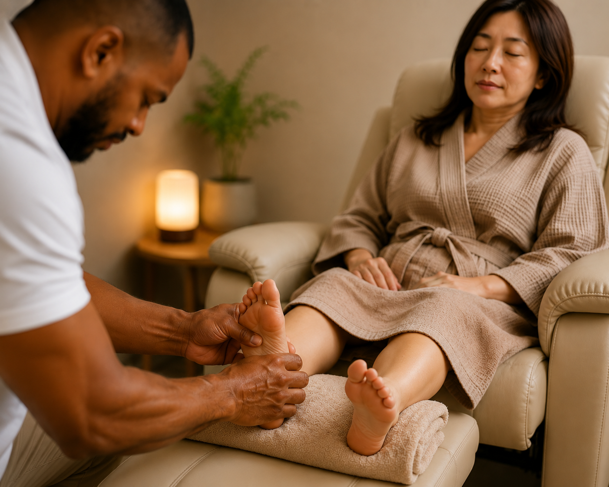

Atendimentos profissionais e humanizados em massoterapia, personalizados para atender você em empresas, condomínios, eventos ou de forma particular.
Massoterapeuta Profissional
Sou Hudson Coutinho, tenho 30 anos e atuo há mais de 10 anos na área da massoterapia, dedicando minha carreira à promoção da saúde, do bem-estar e da qualidade de vida. Meu propósito é levar mais conforto, equilíbrio e disposição para as pessoas por meio de atendimentos profissionais realizados em empresas, eventos e condomínios.
Trabalho com técnicas reconhecidas e eficazes, como Shiatsu na maca, ideal para o alívio de tensões musculares e restauração do equilíbrio corporal; Shiatsu na cadeira (Quick Massage), uma excelente opção para ambientes corporativos e eventos, proporcionando relaxamento e revitalização em poucos minutos; Ventosaterapia, utilizada para auxiliar na redução de dores, tensões e melhorar a circulação sanguínea; e Massagem Relaxante, que promove relaxamento profundo, diminuição do estresse e sensação de bem-estar. Massagem Desportiva, aplicada especialmente em eventos de corrida e atividades esportivas, auxiliando atletas na preparação e recuperação muscular.
Meu compromisso é oferecer um atendimento humanizado, seguro e de alta qualidade, contribuindo para ambientes mais saudáveis, produtivos e com mais qualidade de vida para todos.
Escolha a técnica ideal para o seu momento e sinta os benefícios no corpo e na mente.

Também conhecido como Quick Massage, é perfeito para aliviar tensões musculares do cotidiano. Focado na região do pescoço, ombros e costas, proporciona relaxamento e revitalização imediata em poucos minutos, sendo uma excelente opção para ambientes corporativos e eventos.
Agendar esta
Técnica profunda e terapêutica baseada na pressão de pontos específicos do corpo. É ideal para o alívio profundo de tensões musculares agudas, redução de dores corporais e restauração completa do seu equilíbrio energético e físico.
Agendar esta
Técnica que utiliza copos de sucção para criar um vácuo na pele, estimulando a circulação sanguínea local e a oxigenação dos tecidos. Altamente recomendada para auxiliar na redução de dores, tensões musculares crônicas e liberação de toxinas.
Agendar esta
Massagem focada na estimulação de pontos reflexos específicos localizados nas plantas dos pés, que correspondem a diferentes órgãos e partes do corpo. Excelente para acalmar o sistema nervoso, reduzir a ansiedade e promover bem-estar geral.
Agendar estaLeve saúde e produtividade para o seu ambiente. Estrutura completa levada até você.
Programas de bem-estar corporativo com Quick Massage para colaboradores, reduzindo o estresse e melhorando o clima e o foco.
Sessões agendadas com total praticidade diretamente nas áreas de convivência ou espaço fitness do seu condomínio.
Atuação em eventos corporativos, feiras e competições de corrida, auxiliando atletas na preparação e recuperação muscular rápida.
Sessões exclusivas estruturadas para o seu máximo conforto, com atendimento humanizado, seguro e de alto nível.
A satisfação e o alívio de quem confia no trabalho da HC Terapias.
"O atendimento do Hudson na nossa empresa foi impecável. A equipe amou a Quick Massage e todos voltaram ao trabalho muito mais dispostos e leves!"
"Faço o Shiatsu na Maca e a Ventosaterapia após as corridas. Sinto que a minha recuperação muscular melhorou demais. Recomendo muito o trabalho."
"Profissional exemplar, muito cuidadoso e técnico. O atendimento aqui no condomínio facilita muito a rotina da minha semana."